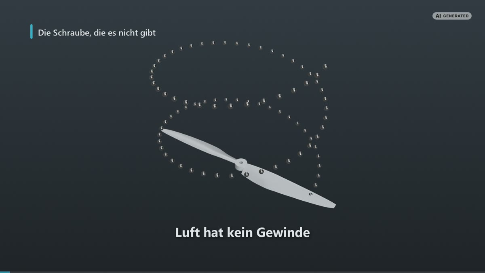
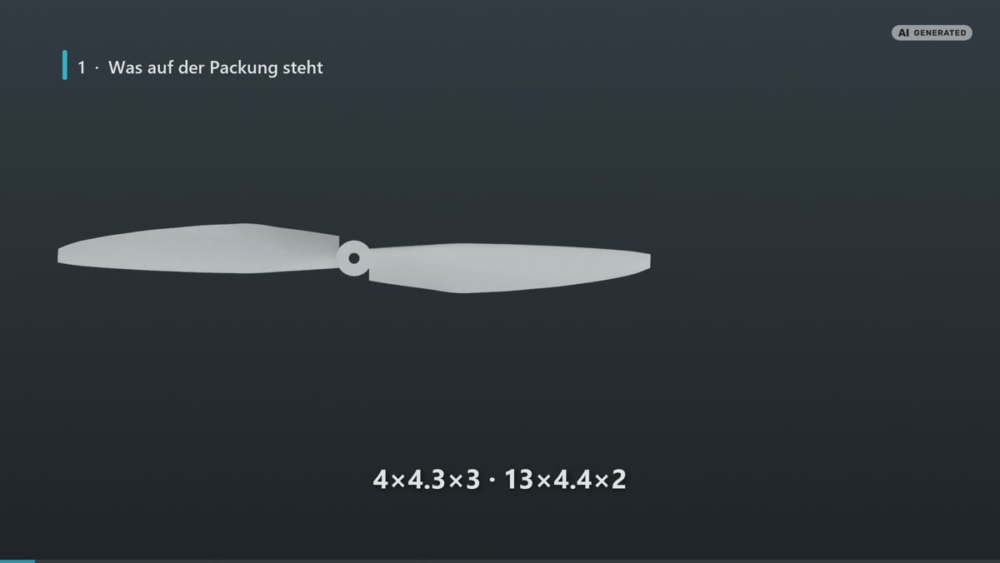
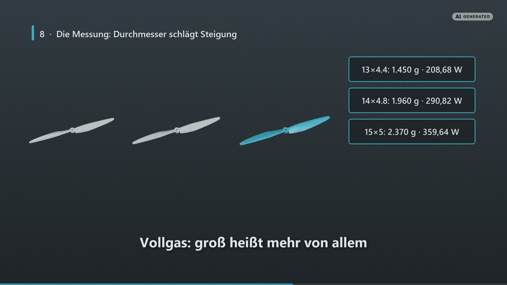
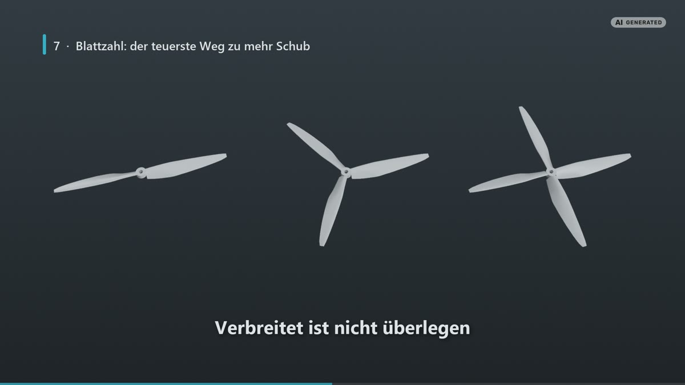
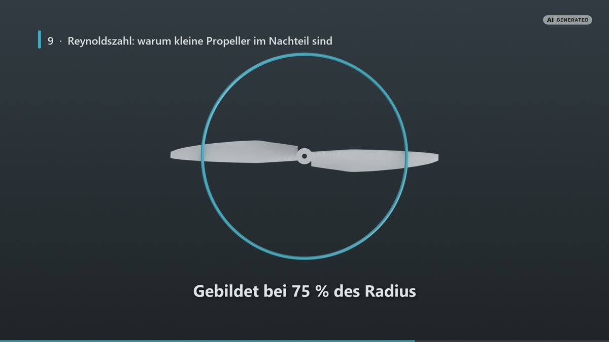
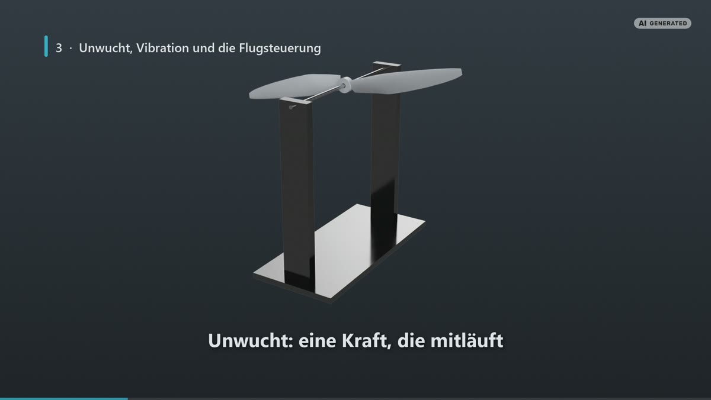

Der günstigste Schub der Welt
Propeller kosten wenige Euro und entscheiden trotzdem darüber, wie lange dein Copter fliegt, wie laut er ist und wie er sich anfühlt. Hier erfährst du, was Durchmesser, Steigung und Blattzahl bedeuten und an welcher Zahl es sich lohnt zu drehen.
Ratgeber · Antrieb & Effizienz · Lesezeit ca. 26 Min · Stand: Oktober 2026
Kurz gesagt
Ein Propeller schraubt sich nicht durch die Luft wie eine Schraube ins Holz, sondern beschleunigt Luft nach hinten und gewinnt aus dem Rückstoß seinen Schub. Deshalb ist der Durchmesser die wichtigste Zahl: Viel Luft langsam zu bewegen kostet weniger Leistung als wenig Luft schnell. In der Messreihe von T-Motor braucht derselbe Motor mit einem 15-Zoll-Propeller für fast denselben Schub rund 18 Prozent weniger Leistung als mit einem 13-Zoll-Propeller. Mehr Blätter sind dagegen der teuerste Weg zu mehr Schub und nur dann richtig, wenn der Frame keinen größeren Durchmesser zulässt. Groß und langsam ist außerdem leise, weil die Geschwindigkeit der Blattspitzen den Lärm am stärksten antreibt. Und ein Propeller mit einer Kerbe gehört in den Müll, nicht zurück an den Motor.
Über den Frame, den Akku, die Funkstrecke, die Videoübertragung und die Motoren haben wir eigene Ratgeber geschrieben. Jetzt geht es um das Bauteil, das ihre Arbeit in Vortrieb umsetzt und trotzdem am seltensten verstanden wird. Der Propeller ist das günstigste Teil am Copter. Er ist auch eines der Bauteile, die dir für geringe Kosten mehr Flugzeit bringen können.
Was dieser Artikel nicht behandelt: die Motorseite derselben Physik, also Statorgröße, KV-Zahl und Drehmoment. Die steht im Motoren-Ratgeber. Ebenfalls außen vor bleiben Flight Controller, Motorregler (ESC) und Propeller für Flugzeuge. Ein Teil der verlässlichsten Messdaten stammt zwar aus der Forschung an Modellflugzeugen, dieser Text bleibt aber beim Multicopter.
Hinweis: Jede Zahl in diesem Text hat eine Fußnote, die auf eine nachprüfbare Quelle zeigt. Wo wir gerechnet statt gemessen haben, steht es ausdrücklich dabei. Falls dir ein Fehler auffällt, melde dich gerne jederzeit bei uns.
Transparenz: Einige Produktlinks in diesem Artikel führen zum deutschen Fachhändler FPV24 und sind Affiliate-Links (Anzeige). Kaufst du darüber, erhalten wir eine kleine Vergütung, für dich ändert sich am Preis nichts. Empfohlen wird nur, was wir fachlich begründen können, und die Begründung steht immer im Text.
1. Was ein Propeller wirklich tut

Das Bild von der Schraube, die sich ins Holz dreht, steckt schon im alten Wort Luftschraube. Es ist bequem, führt aber in die Irre, denn in der Luft gibt es kein Gewinde, an dem sich der Propeller entlangziehen könnte. Was er stattdessen tut, ist einfacher: Er greift die Luft vor sich und wirft sie nach hinten. Der Rückstoß daraus ist der Schub, also die Kraft, die deinen Copter trägt.
In Formeln sieht das so aus: Der Schub ist die Luftmenge pro Sekunde (Fachwort: Massenstrom) mal der Geschwindigkeit, die der Propeller dieser Luft zusätzlich mitgibt. Kurz geschrieben: T = ṁ · (Ve − V0). Der Massenstrom wiederum ergibt sich aus der Dichte der Luft, der durchströmten Fläche und der Strömungsgeschwindigkeit, also ṁ = ρ · A · Vp4. Entscheidend ist das A: die Kreisfläche, die der Propeller beim Drehen überstreicht (Fachwort: Propellerscheibe).
Diese Kreisfläche wächst mit dem Quadrat des Durchmessers. Der Sprung von 13 auf 15 Zoll klingt nach wenig, bringt aber rund ein Drittel mehr Fläche, genau 33 Prozent (unsere Rechnung: 15 geteilt durch 13, das Ergebnis quadriert). Mehr Fläche heißt mehr Luft, und die muss für denselben Schub weniger stark beschleunigt werden.
Das ist der ganze Trick: Viel Luft langsam zu bewegen ist sparsamer als wenig Luft schnell. Die Energie, die in der bewegten Luft steckt, wächst mit dem Quadrat ihrer Geschwindigkeit, der Schub dagegen nur linear. Deshalb fliegt ein großer Long-Range-Copter mit großen, langsam drehenden Propellern weiter als ein kleiner Racer mit kleinen, schnellen. Wer den Durchmesser vergrößern kann, gewinnt mehr als mit jeder Feinarbeit an der Blattform.
Die Kennzahlen aus den Messreihen
Damit sich Propeller unterschiedlicher Größe vergleichen lassen, rechnet die Strömungslehre ihre Messwerte in Kennzahlen ohne Einheit um (Fachwort: dimensionslose Beiwerte). So passen ein kleiner und ein großer Propeller auf dieselbe Skala. Der Schubbeiwert ist CT = T / (ρ · n² · D⁴) und der Leistungsbeiwert CP = P / (ρ · n³ · D⁵), wobei n für die Drehzahl und D für den Durchmesser steht. Eine dritte Zahl beschreibt, wie schnell der Propeller durch die Luft vorankommt, gemessen an Drehzahl und Durchmesser (Fachwort: Fortschrittsverhältnis): J = V / (n · D)5. Mit denselben Definitionen arbeitet auch die Windkanal-Datenbank der University of Illinois2.
Aus den Hochzahlen in diesen Formeln folgt eine wichtige Regel (unsere Rechnung, direkt aus den Definitionen abgelesen): Der Schub wächst mit dem Quadrat der Drehzahl, die Leistung mit der dritten Potenz. Doppelte Drehzahl heißt vierfacher Schub, aber achtfache Leistung. Deshalb kostet das letzte Viertel Gas so viel Akku, und deshalb ist die Frage nach dem höchsten Schub fast immer die falsche.
Im Alltag zählt eine einfachere Kennzahl: Gramm Schub je Watt, also der Schub geteilt durch die elektrische Leistung, die der Antrieb dafür aufnimmt6. Jede Herstellertabelle führt sie mit, und an ihr solltest du deine Kaufentscheidung ausrichten, nicht am Spitzenschub.
2. Die Zahlen auf der Packung

Auf einer FPV-Propellertüte steht meist etwas wie 4×4.3×3 oder 13×4.4×2. Die erste Zahl ist der Durchmesser in Zoll, die zweite die Steigung, ebenfalls in Zoll, und die dritte die Anzahl der Blätter15. Ein 4×4.3×3 hat also vier Zoll Durchmesser, 4,3 Zoll Steigung und drei Blätter. Was die Steigung genau bedeutet, erklärt Kapitel 3.
Daneben gibt es eine vierstellige Kurzform ohne Komma, etwa 5045 für fünf Zoll Durchmesser und 4,5 Zoll Steigung. Sie ist bequem, aber nicht zuverlässig, weil sich die Hersteller nicht alle an dieselbe Lesart halten15. Im Zweifel gilt die ausgeschriebene Form, und wenn es ein Datenblatt gibt, liest du die Werte dort nach, statt sie aus dem Produktnamen zu erraten.
Zwei Angaben fehlen in der Kurzform, obwohl sie für den Kauf entscheidend sind. Die erste ist die Drehrichtung: im Uhrzeigersinn (CW, englisch clockwise) oder gegen den Uhrzeigersinn (CCW, englisch counter-clockwise). Ein Quadrocopter braucht beide Sorten, je zwei Stück, die sich diagonal gegenüberstehen, sonst dreht er sich um die eigene Hochachse, statt zu fliegen. Propellersätze werden deshalb als zwei CW und zwei CCW verkauft16.
Die zweite ist die Nabenbohrung, also das Loch in der Mitte, mit dem der Propeller auf der Motorwelle sitzt. Im FPV-Bereich sind 5 mm der verbreitete Standard. Ein 7×3.5×3 des Propellerherstellers HQProp hat zum Beispiel eine 5-mm-Bohrung bei 13,5 mm Nabendurchmesser und 7 mm Nabendicke16. Passt die Bohrung nicht zur Welle, hilft auch kein Aufbohren von Hand, denn wie genau der Propeller mittig sitzt, entscheidet über die Unwucht. Mehr dazu in Kapitel 10.
Gewicht ist eine Leistungsangabe
Propeller werden fast immer nach Durchmesser und Steigung gekauft und fast nie nach Gewicht. Dabei merkst du das Gewicht im Flugverhalten am schnellsten. Der 4×4.3×3 von HQProp wiegt 2,24 Gramm, der 7×3.5×3 desselben Herstellers 8,8 Gramm2316. Diese Gramm bestimmen, wie stark sich der Propeller gegen jede Änderung seiner Drehzahl sträubt (Fachwort: Massenträgheitsmoment), und damit, wie schnell der Motor ihn beschleunigen oder abbremsen kann. Leichtere Propeller reagieren schneller, und Masse nahe der Nabe stört dabei weniger als Masse an der Blattspitze15.
Für einen Freestyle-Copter, der schnelle Richtungswechsel und Figuren fliegt, spricht das für den leichten Propeller. Für einen Long-Range-Copter, der lange und gleichmäßig geradeaus fliegt, zählt dagegen die Effizienz mehr.
3. Steigung: die Zahl, die eine Obergrenze ist
Die Steigung ist der Teil des Schraubenbildes, den man nicht loswird. Sie gibt an, wie weit sich der Propeller mit einer Umdrehung nach vorn bewegen würde, wenn die Luft fest wäre wie Holz15. Der 4×4.3×3 aus Kapitel 2 würde sich also pro Umdrehung um 4,3 Zoll voranschrauben, der 7×3.5×3 um 3,5 Zoll. Der Durchmesser spielt für diese Zahl keine Rolle.
Aus der Steigung lässt sich eine theoretische Höchstgeschwindigkeit rechnen, die Steigungsgeschwindigkeit: Steigung mal Drehzahl15. Bei angenommenen 25.000 U/min kommt der 4×4.3×3 auf 45,5 Meter je Sekunde, das sind 163,8 km/h. Gerechnet ist das als 4,3 Zoll mal 25.000 Umdrehungen, geteilt durch 60 Sekunden und in Meter umgerechnet (unsere Rechnung). Der größere 7×3.5×3 dreht langsamer. Bei angenommenen 15.000 U/min erreicht er 22,2 Meter je Sekunde, also rund 80 km/h (unsere Rechnung, gleicher Weg).
Im Flug bleibt der Propeller unter diesem Wert, denn Luft ist kein Holz und weicht dem Blatt aus. Den Unterschied zwischen theoretischem und tatsächlichem Vorschub nennt man Schlupf (Fachwort: Slip). Eine zweite Abweichung geht in die andere Richtung. Darauf weist APC hin, ein Hersteller aus Kalifornien, der seit 1989 vor allem Propeller für Modellflugzeuge baut und inzwischen auch Multicopter-Propeller fertigt26. APC veröffentlicht ungewöhnlich viel Technik zu seinen Propellern, deshalb taucht der Name in diesem Artikel öfter auf. Laut APC rechnet die Steigungsgeschwindigkeit mit der gemessenen Steigung und übergeht die Wölbung des Blattes10. Weil das gewölbte Blatt wie ein Flügel zusätzlichen Auftrieb erzeugt, liegt die wirksame Steigung höher als die gemessene10.
Die Steigungsgeschwindigkeit ist also eine grobe Orientierung und kein Tacho. Als Versprechen gelesen enttäuscht sie, als Größenordnung hilft sie dir, zwei Propeller sinnvoll gegeneinander abzuwägen.
Was hohe Steigung kostet
Ein Propeller mit großer Steigung schaufelt pro Umdrehung mehr Luft nach hinten. Das bringt mehr Schub und eine höhere theoretische Endgeschwindigkeit, verlangt dem Motor aber mehr Drehkraft (Fachwort: Drehmoment) ab und zieht mehr Strom. Außerdem ändert ein solcher Propeller seine Drehzahl träger, sodass der Copter langsamer auf Steuerbefehle reagiert, und er ist meist weniger effizient als ein flacherer15.
Eine niedrige Steigung dreht leichter durch die Luft. Sie erlaubt schnellere Drehzahlwechsel, verwirbelt den eigenen Luftstrom weniger und kommt mit weniger Drehmoment und Strom aus, liefert dafür aber weniger Schub und weniger Spitzengeschwindigkeit15. Für einen Copter, der lange fliegen soll, ist das kein Nachteil, sondern die richtige Richtung.
4. Durchmesser schlägt Steigung

Bis hierher war das Theorie. Jetzt kommt die Messung, und sie ist eindeutig.
Der Antriebshersteller T-Motor veröffentlicht für seinen Motor MN4012 Prüfstandsdaten, bei denen derselbe Motor an derselben Spannung mit verschiedenen Propellern gemessen wurde, und zwar mit T-Motors eigenen Carbon-Propellern14. Der MN4012 ist ein Außenläufer, bei dem sich die Glocke mit den Magneten um den feststehenden Kern dreht. Dieser Kern mit den Kupferwicklungen (Fachwort: Stator) misst 40 mm im Durchmesser und 12 mm in der Höhe. Der Motor hat 18 Wicklungsnuten und 24 Magnetpole (Bauart 18N24P), wiegt 155 Gramm mit Kabeln und ist für Akkus mit vier bis acht Zellen freigegeben14. Die Tabelle zeigt die Variante mit 400 KV, also 400 Umdrehungen pro Minute je Volt ohne Last, an 22,2 Volt. Das ist die Nennspannung eines Akkus mit sechs Zellen (6S).
| Propeller | Gas | Leistung | Schub | Drehzahl | Effizienz |
|---|---|---|---|---|---|
| 13×4.4 | 50 % | 82,14 W | 740 g | 4.900 U/min | 9,01 g/W |
| 13×4.4 | 75 % | 133,20 W | 1.040 g | 6.000 U/min | 7,81 g/W |
| 13×4.4 | 100 % | 208,68 W | 1.450 g | 7.150 U/min | 6,95 g/W |
| 14×4.8 | 50 % | 93,24 W | 870 g | 4.500 U/min | 9,33 g/W |
| 14×4.8 | 100 % | 290,82 W | 1.960 g | 6.700 U/min | 6,74 g/W |
| 15×5 | 50 % | 106,56 W | 1.010 g | 4.000 U/min | 9,48 g/W |
| 15×5 | 100 % | 359,64 W | 2.370 g | 6.300 U/min | 6,59 g/W |
Alle Werte aus dem Prüfbericht des Herstellers, MN4012 KV400 an 22,2 Volt, gemessen mit T-Motor-Carbon-Propellern14. „Gas" ist die Stellung des Gashebels, „Effizienz" der Schub je Watt.
Zeile für Zeile gelesen zeigt die Tabelle zuerst das Erwartbare: Der größere Propeller liefert bei Vollgas mehr Schub und zieht mehr Leistung. Spannend wird der Vergleich bei gleichem Schub, denn genau das ist die Lage im Schwebeflug. Der Copter braucht eine bestimmte Schubmenge, um in der Luft zu bleiben, und die Frage ist, welcher Propeller sie am sparsamsten liefert.
Der 13×4.4 liefert bei 75 Prozent Gas 1.040 Gramm Schub und braucht dafür 133,20 Watt. Der 15×5 liefert bei 50 Prozent Gas 1.010 Gramm für 106,56 Watt. Bei fast gleichem Schub braucht der größere Propeller also 17,6 Prozent weniger Leistung (unsere Rechnung: Leistung je Gramm Schub gegeneinander gestellt). Die Effizienzspalte zeigt dasselbe von der anderen Seite: 9,48 gegen 7,81 Gramm je Watt, also 21,4 Prozent besser (unsere Rechnung).
Die Gegenprobe mit einem anderen Motor
Eine einzelne Messreihe kann täuschen. Deshalb folgt die Gegenprobe mit der langsamer drehenden Variante desselben Motors, dem MN4012 mit 340 KV, ebenfalls an 22,2 Volt. Dort liefert der 16×5.4 bei 50 Prozent Gas 910 Gramm für 82,14 Watt, der kleinere 14×4.8 bei 65 Prozent Gas 860 Gramm für 97,68 Watt14. Der größere Propeller braucht damit 20,5 Prozent weniger Leistung (unsere Rechnung) und liefert sogar leicht mehr Schub. Der Effekt ist also kein Ausreißer, sondern hat System.
Die Erklärung steht in derselben Tabelle: Für rund 1.000 Gramm Schub dreht der 13-Zöller mit 6.000 U/min, der 15-Zöller nur mit 4.00014. Ein Drittel weniger Drehzahl bei mehr Fläche ist genau der Mechanismus aus Kapitel 1, hier gemessen statt behauptet.
Wo die Grenze liegt
Einen kostenlosen Gewinn gibt es trotzdem nicht. Der größere Propeller verlangt vom Motor mehr Drehmoment, und das kommt beim bürstenlosen Motor (Brushless) aus einem großen Stator und einer niedrigen KV-Zahl. Ein 15-Zoll-Propeller an einem kleinen Motor erzeugt keine Effizienz, sondern Hitze. Welcher Motor welchen Propeller tragen kann, steht im Motoren-Ratgeber, kurz gefasst: Große Propeller brauchen große Statoren und niedrige KV.
Die zweite Grenze setzt der Frame, denn der Propellerkreis darf nicht über den Arm (Fachwort: Ausleger) hinausragen und den Kreis des Nachbarpropellers nicht schneiden. Bevor du über einen größeren Durchmesser nachdenkst, misst du also zuerst den Frame aus und schaust erst danach in die Tabelle. Die dritte Grenze ist das Flugverhalten: Mehr Durchmesser bedeutet mehr Massenträgheit und damit eine trägere Reaktion. Für Long Range ist das egal oder sogar erwünscht, für Freestyle ist es ein echter Verlust.
5. Blattzahl: der teuerste Weg zu mehr Schub

Im FPV-Bereich sind dreiblättrige Propeller der Normalfall, und viele Piloten halten drei Blätter deshalb für die technisch bessere Lösung. Das verwechselt Verbreitung mit Überlegenheit.
Die Einordnung ist seit Langem unstrittig. Zweiblättrige Propeller gelten als effizient und widerstandsarm und sind damit die Wahl für lange Flüge15. Dreiblättrige sind ein Kompromiss aus Schub, Wendigkeit und Effizienz, und ab vier Blättern gibt es mehr Schub und einen ruhigeren Lauf, aber weniger Effizienz15. Mehr Blätter bedeuten mehr Blattfläche, und mehr Blattfläche verlangt mehr Drehmoment vom Motor15.
Warum das so ist, folgt aus Kapitel 1. Mehr Fläche im Luftstrom ist gut, aber es kommt darauf an, wie du sie bekommst. Über den Durchmesser kommt neue, unberührte Luft dazu. Zusätzliche Blätter arbeiten dagegen im Abwind des vorausgehenden Blattes, also in Luft, die schon in Bewegung ist, und das kostet Wirkungsgrad.
Dass trotzdem fast jeder kleine FPV-Copter drei Blätter hat, liegt am Frame, der den Durchmesser festlegt. Wer mehr Schub braucht und den Kreis nicht vergrößern kann, kann nur noch Blätter hinzufügen. Das ist keine schlechte Entscheidung, sondern die einzige, die übrig bleibt.
Die Messung am Extremfall
Wie weit trägt dieses Argument? Tyto Robotics, ein Hersteller von Prüfständen für Motoren und Propeller, hat es am Extremfall getestet und einem zweiblättrigen Carbonpropeller ein Blatt abgeschnitten. Bei gleichem Steuersignal drehten beide Varianten fast gleich schnell, mit 2.330 gegenüber 2.318 U/min7, also nur zwölf Umdrehungen oder 0,5 Prozent Unterschied. Bei gleicher Drehzahl lieferte das Zweiblatt deutlich mehr Schub, was bei fast doppelter tragender Fläche zu erwarten war.
Der Einblatt-Propeller war nur im untersten Schubbereich sparsamer. Über den ganzen Drehzahlbereich gesehen war das Zweiblatt effizienter, mit einem Vorsprung von bis zu 1,89 Gramm je Watt7. Das Einblatt brachte außerdem mehr Masse mit, weil es ein Gegengewicht braucht, dazu mehr Vibration und schnelleren Verschleiß der Lager7.
Die Lehre daraus: Mehr Blätter sind nicht immer besser, die Blattzahl muss zum Betriebspunkt passen. Gemeint sind der Schub und die Drehzahl, bei denen der Copter die meiste Zeit fliegt. Zu wenig Fläche ist genauso falsch wie zu viel. Und die Reihenfolge der Stellschrauben steht fest: erst Durchmesser, dann Steigung, dann Blattzahl.
6. Blattform: was zwischen Nabe und Spitze passiert
Ein Propellerblatt ist ein Flügel, der im Kreis fliegt. Für ihn gelten deshalb dieselben Regeln wie für eine Tragfläche, mit einer Besonderheit: Außen läuft das Blatt viel schneller durch die Luft als an der Nabe. Ein Blatt, das überall im selben Winkel zur Luft steht (Fachwort: Anstellwinkel), wäre deshalb innen zu steil und außen zu flach angestellt. Die Lösung heißt Verwindung (Fachwort: Twist): Der Anstellwinkel nimmt von innen nach außen ab.
Auch die Form des Blattquerschnitts (Fachwort: Profil) ist kein Zufall. APC nennt für seine Blätter Profile, die zwei bekannten Flügelprofilen ähneln, dem NACA 4412 und dem Clark-Y, mit tiefer liegender Vorderkante und dickerem hinteren Bereich8. Ein Profil, das sich schon an Flugzeugflügeln bewährt hat, wird also auf das Propellerblatt übertragen.
Die Blattspitze ist der Bereich, der am meisten Schub erzeugt und am meisten Ärger macht. Dort ist die Geschwindigkeit am höchsten, dort löst sich ein Luftwirbel vom Blattende (Fachwort: Randwirbel), und dort entsteht der Lärm. Deshalb gibt es zugespitzte Blattenden, die diesen Wirbel schwächen, und breite, abgerundete Enden (Bullnose), die auf kleinem Durchmesser mehr Fläche unterbringen. Beides sind Kompromisse und keine reinen Verbesserungen.
Ein Detail ist wichtig, wenn du Datenblätter vergleichst. Die Leistungsdaten, die APC für seine Propeller veröffentlicht, sind mit einer eigenen Software berechnet, nicht gemessen9. Für Messwerte aus dem Windkanal verweist APC selbst auf die University of Illinois9. Die Tabelle von T-Motor in Kapitel 4 ist dagegen ein Prüfstandsbericht. Wer Herstellerkurven vergleicht, sollte also wissen, welche Sorte Zahl er vor sich hat.
7. Reynoldszahl: warum kleine Propeller im Nachteil sind

Die Reynoldszahl ist eine Kennzahl dafür, ob in einer Strömung die Wucht der bewegten Luft überwiegt (Fachwort: Trägheitskräfte) oder ihre innere Reibung (Fachwort: Zähigkeit). Anschaulich gesagt verhält sich Luft bei hoher Reynoldszahl wie Luft und bei niedriger eher wie Sirup. Die Zahl steigt mit der Geschwindigkeit und mit der Größe des umströmten Teils. Bei Propellern bildet man sie üblicherweise an der Stelle des Blattes, die bei 75 Prozent des Radius liegt1.
Für kleine Propeller ist das keine Theorie, sondern ein großer Teil der Erklärung, warum sich Produkte so stark unterscheiden. Die Windkanal-Datenbank der University of Illinois enthält allein im ersten Band Messungen an fast 140 Propellern, jeweils im Stand und bei mehreren Drehzahlen3. Es ist die größte frei zugängliche Sammlung dieser Art, und weitere Bände sind seitdem hinzugekommen22. Die Propeller darin stammen überwiegend aus dem Modellflug, die Physik dahinter gilt aber für jeden Propeller.
Die zugehörige Auswertung ist deutlich. Untersucht wurden 79 Propeller, fast alle mit neun bis elf Zoll Durchmesser, deren Schub im Stand (Fachwort: Standschub) je nach Durchmesser bei etwa 1.500 bis 7.500 U/min gemessen wurde2. Das Ergebnis: deutliche Reynoldszahl-Effekte, also schlechtere Leistung bei niedrigeren Drehzahlen2.
Wie viel ein Propeller aus der eingesetzten Leistung an Vortrieb macht (Fachwort: Wirkungsgrad), schwankte dabei erheblich: von nahe 0,65 bis hinunter auf etwa 0,28 bei einem „außergewöhnlich schlechten" Propeller2. Ein Wirkungsgrad von 0,65 heißt, dass 65 Prozent der Leistung als Vortrieb ankommen. Zwischen dem besten und dem schlechtesten Propeller derselben Größenklasse liegt also mehr als der Faktor zwei, und das ist mehr, als jede Motorwahl ausmacht.
Was daraus für den Bau folgt
Erstens ist derselbe Propeller bei niedriger Drehzahl schlechter als bei hoher. Das setzt der Idee eine Grenze, Effizienz über besonders niedrige Drehzahlen zu holen, denn irgendwann verliert die Strömung mehr, als die geringere Geschwindigkeit einspart.
Zweitens sind kleine Propeller immer im Nachteil, weil sie bei jeder Drehzahl kleinere Reynoldszahlen sehen. Ein kleiner FPV-Propeller arbeitet dauerhaft in einem Bereich, in dem die Strömung zäh ist und das Profil weniger leistet. Das ist kein Konstruktionsfehler der Hersteller, sondern der Preis der Baugröße, und ein weiteres Argument dafür, für lange Strecken groß zu bauen.
Drittens sagen Markenname und Preis wenig. Ob ein Propeller taugt, zeigt eine Messreihe, nicht eine Produktbeschreibung.
8. Material: warum unkaputtbar kein Ziel ist
Im FPV-Bereich ist Polycarbonat (PC) der Standard, ein leichter, zäher und elastischer Kunststoff. Er biegt sich, bevor er bricht, und übersteht Kontakt mit Gras und Ästen, der einen steiferen Propeller zerlegen würde15. Hersteller wie HQProp geben das Material auf jeder Produktseite an16.
Die zweite Familie sind Propeller aus faserverstärktem Kunststoff. APC fertigt seine Propeller zum Beispiel aus Nylon mit eingelagerten Glas- oder Carbonfasern26, darunter eine Variante aus 40 Prozent Carbon und 60 Prozent Nylon10. Solche Propeller sind steifer und behalten ihre Form auch unter Last. Genau darum geht es, denn ein Propeller, der sich unter Schub aufbiegt, ändert seine wirksame Steigung und arbeitet dann an einem anderen Punkt als geplant.
➜ HQProp MacroQuad 10×4.5×3 aus glasfaserverstärktem Nylon bei FPV24 ansehen (Anzeige)
➜ HQProp MacroQuad 10×5.5×3 aus glasfaserverstärktem Nylon bei FPV24 ansehen (Anzeige)
Vollcarbon ist die dritte Möglichkeit, wie bei den Propellern, mit denen T-Motor die Messreihe aus Kapitel 4 gefahren hat14. Carbon ist steif, leicht und teuer, im Schadensfall aber unangenehm, weil es splittert, statt sich zu verformen, und die Bruchstücke scharf sind. Für große, langsam drehende Long-Range-Propeller ist die Steifigkeit ein echter Vorteil. Für einen Freestyle-Copter, der regelmäßig Bodenkontakt hat, ist Carbon das falsche Material.
Was Material im Betrieb ausmacht
Zwei Umwelteinflüsse werden oft unterschätzt. Der erste ist Feuchtigkeit: APC weist darauf hin, dass Verbundpropeller Festigkeit, Steifigkeit und Dauerfestigkeit verlieren, wenn sie Feuchtigkeit aufnehmen, und rät zu trockener Lagerung12. Dauerfestigkeit heißt dabei, wie viele Belastungswechsel ein Teil aushält, ohne zu ermüden. Der zweite Einfluss ist Kälte, denn bei niedrigen Temperaturen werden Propeller steifer und spröder, und das Bruchrisiko steigt15. Wer im Winter fliegt, schaut sich seine Propeller danach genauer an als im Sommer.
Bleibt die Frage, warum man überhaupt ein Material wählen sollte, das kaputtgeht. Die Energie eines Aufpralls muss irgendwohin. Ein Propeller, der bricht, nimmt einen Teil davon mit, und einer, der nicht bricht, leitet sie in Motorwelle, Lager und Ausleger weiter. Das gebrochene Teil kostet ein paar Euro, das verzogene Motorlager deutlich mehr.
9. Drehzahlgrenzen und Blattspitzengeschwindigkeit
Propeller haben eine Höchstdrehzahl, die selten auf der Packung steht. APC veröffentlicht sie als Formel je nach Bauart, wobei der Durchmesser in Zoll eingesetzt wird11. Für Copter sind zwei Bauarten wichtig:
| Bauart | Grenzdrehzahl |
|---|---|
| Dünne Elektro- und Polycarbonat-FPV-Propeller | 150.000 / Durchmesser |
| Multirotor und Multirotor-Klapppropeller | 105.000 / Durchmesser |
Angaben des Herstellers APC für APC-Propeller; andere Hersteller veröffentlichen eigene Grenzen11.
Eingesetzt heißt das (unsere Rechnung): Ein FPV-Propeller aus Polycarbonat mit 7 Zoll darf bis rund 21.400 U/min drehen. Ein Multirotor-Propeller mit 13 Zoll darf nur bis rund 8.077 U/min. Der 13×4.4 aus Kapitel 4 dreht bei Vollgas 7.150 U/min14 und bleibt damit unter dieser Grenze.
Warum es diese Grenze gibt
Einer der drei Lastfälle, für die ein Propellerblatt ausgelegt wird, ist die Fliehkraft8. Sie zieht das Blatt beim Drehen nach außen und wächst mit dem Quadrat der Drehzahl. Wer zehn Prozent über der Grenze dreht, hat deshalb nicht zehn Prozent mehr Last, sondern einundzwanzig.
Anschaulicher wird das über die Blattspitzengeschwindigkeit, also die Strecke, die die Blattspitze in einer Sekunde zurücklegt. Sie ergibt sich aus dem Umfang des Propellerkreises mal der Drehzahl. Für die Propeller aus diesem Artikel (unsere Rechnung):
| Propeller | Drehzahl | Blattspitze | entspricht |
|---|---|---|---|
| 13 Zoll | 6.000 U/min | 103,7 m/s | 373 km/h |
| 15 Zoll | 4.000 U/min | 79,8 m/s | 287 km/h |
| 7 Zoll | 21.400 U/min (Grenze) | 199,5 m/s | 718 km/h |
Der 7-Zöller an seiner Grenze bewegt die Blattspitzen also mit knapp 200 Metern je Sekunde. Das sind rund 58 Prozent der Schallgeschwindigkeit (unsere Rechnung, mit 343 m/s gerechnet). In diesem Bereich beginnt sich die Luft vor der Blattspitze zusammenzudrücken (Fachwort: Kompressibilitätseffekte), und der Lärm steigt steil an. Der 15-Zöller bleibt bei rund 1.000 Gramm Schub bei 79,8 m/s, das sind 23,1 Prozent weniger als beim 13-Zöller (unsere Rechnung).
10. Unwucht, Vibration und was der Flight Controller daraus macht

Ein Propeller, der nicht genau symmetrisch ist, erzeugt bei jeder Umdrehung eine Kraft, die mit ihm umläuft (Fachwort: Unwucht). Diese Kraft geht in die Motorlager, in den Ausleger und schließlich in den Beschleunigungssensor des Flight Controllers. Das ist die Steuerplatine, die den Copter in der Luft stabil hält. Dort wird sie zum Problem, weil die Regelung nicht unterscheiden kann, ob der Copter kippt oder der Propeller rüttelt.
Beim Multicopter ist allerdings nicht die Unwucht die größte Quelle. Die Dokumentation der Flugsoftware ArduPilot nennt als Hauptursache die Blätter, die über die Ausleger streichen18. Dazu kommt, dass sich Rahmen und vor allem Ausleger durchbiegen und dabei eigene, ungleichmäßige Schwingungen erzeugen. ArduPilot rät deshalb zu Auslegern aus Aluminium oder Carbon, leichtgängigen Motorlagern und Propelleradaptern, die mittig und gerade laufen18.
Ab wann es zu viel ist
ArduPilot nennt konkrete Grenzwerte für die Vibration, gemessen als Beschleunigung in Metern je Sekunde zum Quadrat (m/s²), und das sind einige der wenigen belastbaren Zahlen zu diesem Thema. Unter 30 m/s² ist normalerweise akzeptabel, darüber kann es Probleme geben, und über 60 m/s² gibt es fast immer Probleme beim Halten von Höhe und Position17. Als Richtwert für einen gesunden Copter gelten Werte unter 15 m/s² mit gelegentlichen Spitzen bis 3017.
Zusätzlich zählt die Software, wie oft ein Beschleunigungssensor an seine Messgrenze von 16 g stößt, also an das 16-Fache der Erdbeschleunigung (Fachwort: Clipping). Im Idealfall passiert das über den ganzen Flug kein einziges Mal. Niedrige Werte unter 100 sind vertretbar, besonders nach harten Landungen, eine über den Flug stetig steigende Zahl zeigt dagegen ein ernstes Vibrationsproblem17.
Auswuchten, richtig gemacht
Wie man einen Propeller auswuchtet, beschreibt APC genauer als die meisten Hersteller, und die Anleitung gilt für jeden Propeller mit sauber gefertigter Nabe. APC gibt an, viel Aufwand zu treiben, damit die Propeller ab Werk möglichst gut ausgewuchtet sind13. Prüfen solltest du trotzdem, und dabei kommt es auf ein Detail an: Geprüft wird über das präzise gespritzte Loch auf der Rückseite der Nabe, nicht über die gebohrte Seite. Du steckst einen Stift hindurch, der dünner ist als die Bohrung, und sicherst ihn mit einer Scheibe an der vorderen Nabenfläche, so wie der Propeller später am Motor sitzt13.
Zeigt sich eine Unwucht, trägst du Material an der Ober- und Unterseite der Spitze des schwereren Blattes ab13. Alternativ kommt ein Streifen durchsichtiges Klebeband auf das leichtere Blatt, was APC aber nur für Elektroantriebe empfiehlt13. Für die Montage gilt: Die Bohrung soll für die Motorwelle bewusst zu groß sein, damit allein der Adapterring den Propeller mittig ausrichtet13. Ein Propeller, der auf der Welle klemmt, sitzt deshalb nicht besser, er lässt sich nur schlechter korrigieren.
Was die Software daraus macht
Moderne Flugsoftware bekämpft die verbleibende Vibration mit Filtern, die der Motordrehzahl folgen. Betaflight, die verbreitete Flugsoftware für FPV-Copter, betreibt dafür standardmäßig 36 Kerbfilter, die jeweils ein schmales Frequenzband herausschneiden (Fachwort: Notch). Das sind zwölf je Drehachse (Nicken, Rollen und Gieren). Sie decken die ersten drei Harmonischen des Motorgeräuschs ab, also die Grundschwingung und ihre Vielfachen19.
Damit das funktioniert, rechnet die Software die gemeldete elektrische Drehzahl in die mechanische um, und dafür muss die Zahl der Magnetpole des Motors eingetragen sein. Typische FPV-Motoren der Fünf-Zoll-Klasse haben 14 Magnete, kleinere oft 1219. Konkret sind es 14 Pole bei den Baugrößen 22XX, 23XX und 24XX und 12 Pole bei den Baureihen von 08XX bis 16XX24, wobei die ersten beiden Ziffern den Statordurchmesser in Millimetern angeben.
Der Nutzen ist messbar: Betaflight beschreibt kühler laufende Motoren, eine bessere Toleranz gegenüber verbogenen Propellern und einen saubereren Klang bei Vollgas19. Genau hier liegt aber auch die Gefahr. „Bessere Toleranz gegenüber verbogenen Propellern" heißt nicht, dass ein verbogener Propeller in Ordnung wäre. Die Filter entfernen das Störsignal aus der Regelung, nicht die Kraft in den Lagern, und ersetzen deshalb weder das Auswuchten noch den Propellerwechsel.
11. Lärm: groß und langsam ist leise
Lärm ist bei Multicoptern kein Nebenthema, denn er entscheidet mit darüber, wo du fliegen kannst und wie Drohnen in Wohngebieten ankommen.
Die wichtigste Stellschraube ist bekannt. Eine Studie der US-Raumfahrtbehörde NASA zur Lärmvorhersage künftiger Lufttaxis nennt die Blattspitzengeschwindigkeit als gut belegten Haupttreiber des Lärms20. Sie war dort die wichtigste Auslegungsgröße, noch vor Blattverwindung, Zuspitzung und Blattzahl20. Untersucht wurden sechs Entwürfe mit Blattspitzengeschwindigkeiten von 450 bis 700 Fuß je Sekunde, und allein deren Variation brachte bis zu 9 EPNdB weniger Lärm20. EPNdB ist ein Lärmmaß aus der Luftfahrt, das mitbewertet, wie lästig ein Geräusch für Menschen klingt.
Die Studie betrachtet Fluggeräte einer ganz anderen Größenklasse. Ihre absoluten Zahlen lassen sich nicht auf einen FPV-Copter übertragen, die Richtung schon, denn sie folgt aus derselben Aerodynamik. Sie deckt sich auch mit dem Ergebnis aus Kapitel 9: Der Wechsel vom 13- auf den 15-Zoll-Propeller senkt bei gleichem Schub die Blattspitzengeschwindigkeit um 23,1 Prozent (unsere Rechnung). Der größere Propeller ist also nicht nur sparsamer, sondern aus demselben Grund auch leiser.
Warum der eine sirrt und der andere brummt
Neben der Lautstärke ändert sich auch die Tonhöhe. Den Grundton bestimmt, wie oft pro Sekunde ein Blatt an einem festen Punkt vorbeikommt (Fachwort: Blattfolgefrequenz), also Drehzahl geteilt durch 60, mal Blattzahl.
Für den dreiblättrigen 7-Zöller an seiner Grenze von rund 21.400 U/min sind das rund 1.070 Hertz, für den zweiblättrigen 15-Zöller bei 4.000 U/min nur 133 Hertz (beides unsere Rechnung). Das Ohr ist dabei nicht überall gleich empfindlich, denn die Eigenschwingung des Gehörgangs verstärkt Töne zwischen 2.000 und 7.000 Hertz besonders stark25. Der Grundton des 7-Zöllers liegt unterhalb dieses Bereichs, seine ersten beiden Obertöne mit rund 2.140 und 3.210 Hertz liegen aber mitten darin (unsere Rechnung). Beim großen, langsamen Propeller bleiben Grundton und Obertöne weit darunter. Deshalb klingt der eine wie ein wütendes Insekt und der andere wie ein entfernter Ventilator.
Wer leiser fliegen will, hat damit eine klare Reihenfolge: zuerst ein größerer Durchmesser bei niedrigerer Drehzahl, als Zweites weniger Blätter, und erst danach lohnt es sich, über die Blattform nachzudenken.
12. Sicherheit und rechtlicher Rahmen
Beim Thema Sicherheit sind die Hersteller ungewöhnlich deutlich. APC schreibt: „Alle Propeller sind grundsätzlich gefährlich. Modellflugpropeller sind besonders gefährlich."12 Die zentrale Anweisung lautet, sich niemals selbst in die Ebene zu stellen, in der sich der Propeller dreht, und auch andere ihr nicht auszusetzen12. Außerdem solle man davon ausgehen, dass ein Propeller jederzeit versagen kann, besonders bei Leistungsproben am Boden12.
Das ist keine juristische Floskel. Ein 13-Zoll-Propeller bewegt seine Blattspitzen mit über 370 km/h (Kapitel 9), und abbrechende Stücke fliegen mit dieser Geschwindigkeit davon. Für dich heißt das dreierlei. Steck den Akku erst an, wenn niemand in der Drehebene steht. Bleib bei Schubtests am Boden hinter dem Copter. Und meide die Drehebene auch dann, wenn die Propeller abmontiert zu sein scheinen.
Wann ein Propeller in den Müll gehört
Jede Kerbe an der Vorderkante und jeder Haarriss an der Nabe ist ein Ausgangspunkt für einen Ermüdungsbruch (Fachwort: Dauerbruch). Die Dauerfestigkeit ist genau die Größe, für die ein Propellerblatt ausgelegt wird8, und eine Kerbe hebelt diese Auslegung aus. Dazu kommen die Einflüsse aus Kapitel 8: Feuchtigkeit senkt Festigkeit, Steifigkeit und Dauerfestigkeit12, und Kälte macht spröde15.
Die Regel daraus ist unbequem, aber richtig: Ein Propeller mit sichtbarem Schaden fliegt nicht mehr. Er kostet ein paar Euro, ein Motorschaden ein Vielfaches davon und ein verletzter Mensch ungleich mehr.
Was die Propellerwahl für die Betriebskategorie bedeutet
In den EU-Regeln für Drohnen kommt der Propeller als eigenes Bauteil nicht vor, seine Masse aber sehr wohl. Die Unterklassen der offenen Kategorie, also der Kategorie für Flüge mit geringem Risiko ohne besondere Genehmigung, hängen an der Startmasse, und zur Startmasse zählen die Propeller mit21.
Wer unter der Grenze von 250 Gramm21 bleiben will, muss die Propeller deshalb mitrechnen. Vier 4×4.3×3 von HQProp wiegen zusammen knapp 9 Gramm (unsere Rechnung: vier mal 2,24 Gramm). Ein größerer Durchmesser verlagert außerdem Masse nach außen, was an der Kategorie nichts ändert, wohl aber an der Energie im Schadensfall.
13. Die Reihenfolge, in der du auswählst
Aus den bisherigen Kapiteln ergibt sich eine feste Reihenfolge, und sie beginnt nicht beim Propeller, sondern bei dem, was ihn begrenzt.
Erstens der Frame. Er gibt den größten Durchmesser vor, der ohne Überschneidung mit den Nachbarpropellern und ohne Überstand über den Ausleger möglich ist. Diese Zahl ist eine harte Grenze, keine Empfehlung.
Zweitens der Motor. Er muss das Drehmoment für den gewählten Durchmesser liefern, was auf einen großen Stator und eine niedrige KV hinausläuft. Wie du ihn auswählst, steht im Motoren-Ratgeber, und die Prüfstandstabellen der Hersteller zeigen für jede Kombination, was herauskommt.
Drittens der größte Durchmesser, den Frame und Motor zulassen. Das ist die Entscheidung mit dem größten Hebel: rund 18 Prozent weniger Leistung für denselben Schub beim Sprung von 13 auf 15 Zoll (Kapitel 4).
Viertens eine mäßige Steigung. Für lange Strecken lieber flach, denn die Endgeschwindigkeit, die du dabei verschenkst, fliegt kaum jemand aus.
Fünftens so wenige Blätter wie möglich. Zwei Blätter, wenn der Durchmesser reicht, drei nur dort, wo der Frame den Durchmesser begrenzt.
Sechstens das Material nach Einsatz. Polycarbonat für alles, was regelmäßig Bodenkontakt hat, faserverstärkte Propeller oder Carbon für große, langsam drehende Long-Range-Propeller.
Die Probe: passt der Betriebspunkt?
Am Ende steht eine Rechnung, mit der du jeden Vorschlag prüfen kannst. Ein Beispiel mit den Zahlen aus Kapitel 4: Ein 13-Zoll-Copter mit angenommenen 2,9 Kilogramm Abflugmasse braucht im Schwebeflug 725 Gramm Schub je Motor (unsere Rechnung: 2.900 geteilt durch vier). In der Tabelle liegt dieser Punkt bei etwa halbem Gas, wo der 13×4.4 am MN4012 KV400 740 Gramm für 82,14 Watt liefert, also 9,01 Gramm je Watt14. Das ist der effizienteste Punkt, den die Messreihe für diesen Propeller zeigt.
Daraus folgt eine Faustregel: Ein Copter, der im Schwebeflug bei etwa halbem Gas steht, ist nicht zu schwach motorisiert, sondern richtig ausgelegt. Für deine eigene Rechnung brauchst du drei Dinge: die Abflugmasse, den Motortyp und dessen Prüfstandstabelle.
Und ein letzter, unspektakulärer Punkt: Propeller sind Verschleißteile. Wer mit einem Satz aus dem Haus geht, fliegt einmal, wer drei Sätze einpackt, fliegt den ganzen Nachmittag.
Wenn du unsicher bist, welche Kombination aus Motor und Propeller zu deinem Vorhaben passt, sprich uns an, bevor du bestellst.
➜ Passend dazu: der Motoren-Ratgeber
➜ Passend dazu: Teileliste 13-Zoll-Build
➜ Passend dazu: Teileliste 10-Zoll-Build
➜ Persönliche Beratung zu deinem Build anfragen
Dieser Ratgeber ersetzt keine individuelle technische Prüfung. Alle Angaben ohne Gewähr. Wo wir gerechnet statt gemessen haben, steht es ausdrücklich dabei. Alle Quellen wurden zwischen August und Oktober 2026 abgerufen und geprüft.
Quellenangaben
- UIUC Applied Aerodynamics Group, „UIUC Propeller Data Site". Windkanalmessungen an Propellern für kleine UAV und Modellflugzeuge, Bildung der Reynoldszahl auf der Blattstation bei 75 Prozent des Radius: m-selig.ae.illinois.edu/props/propDB.html
- Brandt, J. B. und Selig, M. S., „Propeller Performance Data at Low Reynolds Numbers", AIAA Paper 2011-1255. 79 getestete Propeller, fast alle 9 bis 11 Zoll, Standschub von 1.500 bis 7.500 U/min, deutliche Reynoldszahl-Effekte mit Leistungsabfall bei niedrigerer Drehzahl, Wirkungsgrad von 0,65 bis 0,28; Definitionen von J, CT, CP und Wirkungsgrad: m-selig.ae.illinois.edu, AIAA 2011-1255 (PDF)
- UIUC Propeller Data Site, Band 1. Nahezu 140 Propeller, Hersteller Aeronaut, APC, Graupner, GWS, Kavon, Kyosho, Master Airscrew, Rev Up und Zingali, je Propeller Standmessung und Windkanalmessungen bei mehreren Drehzahlen: m-selig.ae.illinois.edu, Band 1
- Tyto Robotics, „How to Calculate & Measure Propeller Thrust". Schub aus dem Impulssatz, T = ṁ (Ve − V0) mit ṁ = ρ A Vp, Bedeutung der Scheibenfläche: tytorobotics.com, Propeller Thrust
- Tyto Robotics, „How to Measure Propeller Performance Coefficients". Definitionen von Schubbeiwert, Drehmomentbeiwert, Leistungsbeiwert und Fortschrittsverhältnis samt Exponenten von Drehzahl und Durchmesser: tytorobotics.com, Performance Coefficients
- Tyto Robotics, „How to Measure Brushless Motor and Propeller Efficiency". Definition der Propellereffizienz als Schub geteilt durch mechanische Leistung in Gramm je Watt: tytorobotics.com, Motor and Propeller Efficiency
- Tyto Robotics, „Single Blade Propeller Efficiency: The Unexpected Results". Vergleich Einblatt gegen Zweiblatt: 2.330 gegen 2.318 U/min bei gleichem Signal (0,5 Prozent), höherer Schub beim Zweiblatt, Vorsprung von bis zu 1,89 g/W, Nachteile Masse, Vibration und Verschleiß: tytorobotics.com, Single Blade
- APC Propellers, „Engineering". Profile ähnlich NACA 4412 und Clark-Y, Eppler E63 innen bei dünnen Elektro- und Slow-Fly-Propellern, Wirbeltheorie als Rechenverfahren, Lastfälle Biegung, Fliehkraft und Torsion, Dauerfestigkeit nach Goodman, Gerber und Smith: apcprop.com/technical-information/engineering
- APC Propellers, „Performance Data". Die veröffentlichten Leistungsdaten werden mit einer eigenen Analysesoftware aus der tatsächlichen Propellergeometrie berechnet, nicht gemessen; für Windkanaldaten verweist APC auf die University of Illinois: apcprop.com/technical-information/performance-data
- APC Propellers, „Propeller FAQ". Steigungsgeschwindigkeit rechnet mit der gemessenen Steigung und lässt die Profilwölbung außer Acht, wirksame Steigung liegt höher; Werkstoffe Nylon und Spritzguss-Verbund aus 40 Prozent Carbon und 60 Prozent Nylon; lackierte Propeller müssen neu ausgewuchtet werden, eingefärbte nicht: apcprop.com/faq
- APC Propellers, „RPM Limits". Grenzdrehzahlen je Bauart als Formel über den Durchmesser in Zoll, von 65.000 für Slow Flyer bis 270.000 für Racing-Propeller am Elektromotor, 105.000 für Multirotor-Propeller: apcprop.com/technical-information/rpm-limits
- APC Propellers, „Safety Concerns". Grundsätzliche Gefährlichkeit aller Propeller, Verbot des Aufenthalts in der Rotationsebene, Annahme jederzeitigen Versagens besonders bei Vollgas am Boden, Feuchtigkeit senkt Festigkeit, Steifigkeit und Dauerfestigkeit von Verbundpropellern: apcprop.com/technical-information/safety-concerns
- APC Propellers, „Technical Support Advisories". Werksseitiges Auswuchten, Prüfung über das präzise gespritzte Loch an der Nabenrückseite, Korrektur durch Materialabtrag an der Spitze des schweren Blattes oder Klarsichtband auf dem leichten, Zentrierung ausschließlich über den Adapterring: apcprop.com/technical-information/technical-support-advisories
- T-Motor, Produktseite und Prüfbericht MN4012. Stator 40×12 mm, 18N24P, 155 g mit Kabeln, 4 bis 8S; Messreihen für KV400 an 22,2 V mit 13×4.4, 14×4.8 und 15×5 sowie für KV340 an 22,2 V mit 14×4.8, 15×5 und 16×5.4, je Zeile Leistung, Schub, Drehzahl und Gramm je Watt: store.tmotor.com, MN4012 KV400
- Oscar Liang, „Choosing Propellers for FPV Drones". Bezeichnungsschema Durchmesser mal Steigung mal Blattzahl, Uneinheitlichkeit der vierstelligen Kurzform, Wirkung von Durchmesser und Steigung, Blattzahl-Einordnung, Polycarbonat als üblicher Werkstoff, Gewicht und Massenträgheit, Formel für die Steigungsgeschwindigkeit, Versprödung bei Kälte: oscarliang.com/propellers
- HQProp, Produktseite 7×3.5×3. Werkstoff Polycarbonat, 8,8 g je Propeller, 5 mm Wellenbohrung, 13,5 mm Nabendurchmesser, 7 mm Nabendicke, Satz aus zwei CW und zwei CCW: hqprop.com, 7×3.5×3
- ArduPilot, „Measuring Vibration". Unter 30 m/s² normalerweise akzeptabel, über 30 möglicherweise und über 60 nahezu immer Probleme mit Höhen- und Positionshaltung, Referenzwerte unter 15 mit Spitzen bis 30, Clipping ab 16 g, Zahlen unter 100 vertretbar: ardupilot.org, Measuring Vibration
- ArduPilot, „Vibration Damping". Größte Vibrationsquelle beim Multicopter sind die über die Ausleger streichenden Blätter, Auslegerflex als Ursache asynchroner Vibration, Anforderungen an Lager und Propelleradapter, Auswuchten mit einem guten Propellerwuchtgerät: ardupilot.org, Vibration Damping
- Betaflight, „DShot RPM Filtering". 36 Kerbfilter, zwölf je Achse für die ersten drei Harmonischen, Umrechnung von elektrischer auf mechanische Drehzahl über die Polzahl, 14 Magnete bei typischen Fünfzoll-Motoren, kühlere Motoren und bessere Toleranz gegenüber verbogenen Propellern: betaflight.com, DShot RPM Filtering
- Radotich, M. u. a., „Conceptual Design Trade Studies for Acoustic Predictions", NASA Technical Reports Server. Blattspitzengeschwindigkeit als primäre Auslegungsgröße vor Verwindung, Zuspitzung und Blattzahl, sechs Entwürfe mit 450 bis 700 ft/s, Einsparung von bis zu 9 EPNdB allein durch deren Variation: ntrs.nasa.gov, 20240000889
- EASA, „Open category of civil drones". Unterkategorien A1, A2 und A3, 250 Gramm für den Flug über unbeteiligten Personen, 30 Meter Abstand in A2 und fünf Meter bei Langsamflug, 150 Meter in A3, Höchsthöhe 120 Meter über Grund, Klassenkennzeichnungen C0 bis C4: easa.europa.eu, Open Category
- UIUC Applied Aerodynamics Group, Publikationsliste. Weitere Messreihen zu kleinen Propellern bei niedrigen Reynoldszahlen, unter anderem Deters, Ananda und Selig, AIAA 2014-2151: m-selig.ae.illinois.edu/publications.html
- HQProp, Produktseite 4×4.3×3 V1S. Werkstoff Polycarbonat, 2,24 g je Propeller, 5 mm Wellenbohrung, 13 mm Nabendurchmesser: hqprop.com, 4×4.3×3 V1S
- Oscar Liang, „How to Setup RPM Filters in Betaflight". Polzahlen je Motorbaureihe, 14 Pole bei 22XX, 23XX und 24XX, 12 Pole bei 08XX bis 16XX, drei Harmonische je Motor und Achse und damit 36 Kerbfilter: oscarliang.com/rpm-filter
- Peterson, D. C. u. a., „Physiology, Ear", StatPearls, NCBI Bookshelf. Resonanz des Gehörgangs für kurze Wellenlängen im Bereich von 2.000 bis 7.000 Hertz, Hörbereich des jungen Ohrs von 20 bis 20.000 Hertz: ncbi.nlm.nih.gov, Physiology, Ear
- APC Propellers, „About". Propeller für Modellflugzeuge seit 1989, gefertigt in Kalifornien; Verbundwerkstoff aus Nylon mit langen Glas- oder Carbonfasern; Größen von 4 bis 27 Zoll; Multirotor-Propeller inzwischen in Serie: apcprop.com/about
Änderungshistorie
- 20.10.2026 · Wissensvideo-Serie ergänzt
- 19.10.2026 · Erstveröffentlichung
Partner & Empfehlungen
Anzeige: Ausrüstung, die wir selbst nutzen und empfehlen können. Die folgenden Links sind Affiliate-Links; kaufst du darüber, erhalten wir eine Provision, für dich ändert sich am Preis nichts. Empfohlen wird nur, was uns fachlich überzeugt.
dracolabsDRACOLABSGERMANYAus unserem Shop
Werbung in eigener Sache: Diese Produkte verkaufen wir selbst. Das sind keine Affiliate-Links.